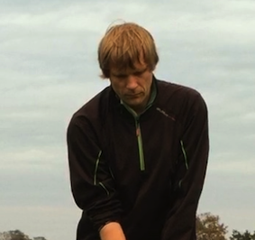

My resume
Summeary
After primary school I had varied jobs from worked on cargo ships, different craftsmans work to lifeguard in a
swimming
pool. I also have an interest in chemistry and got an education as technician. For 25 years I have worked as R&D
on a paint factory. In my spare time I enjoy all kind of sports.
Education
- 1985 Primary Schole
- 1990 Saior
- 1991 Blacksmith helper
- 1995 Industial painter
- 1996 Proces teknical
- Border school progamming course (Delphi)
- Online Database course
- Computer scientist start course (JAVA)
- Online course Swift
- Online course Web developer
Work Experience
- 1985 work on a ship
- 1991 work as blacksmith
- 1991 work as life guard (swimmingpool)
- 1995 work as painter
- current work as paint R&D
Skills
- Creating R&D paint task databse(MS Access)
- Crating dabase for expencies including calori consumpsion (Filemaker/Claris)
On the golfcourse
